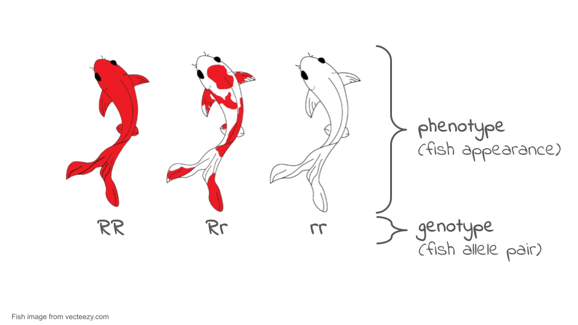
Population Genetics
Evolution is defined as a change in allele frequencies in a population over generations. Natural selection is one of the mechanisms driving these changes. Organisms with heritable traits that provide an advantage in a particular environment tend to survive longer and produce more offspring, causing those advantageous traits—and the alleles behind them—to become more common in the population.
However, natural selection is not the only way allele frequencies change. Genetic drift, migration, mutation, and environmental shifts also influence how populations evolve, sometimes in unpredictable ways.
In this activity, we will be working with the PopGen Fishpond Simulator. Before working with quantitative models in the PopGen fishpond simulation, keep in mind:
- A trait is only advantageous in a specific environment.
- Mutations introduce new variation, which selection may or may not favor.
- Natural selection is not random, but drift is random.
- Environmental changes can reverse which alleles are beneficial.
In this activity, you will use a population genetics simulation to observe how allele frequencies shift through time and how natural selection, genetic drift, and migration can impact these frequencies.
Introduction
Microevolution, or evolution on a small scale, is defined as a change in the frequency of gene variants, and alleles, in a population over generations. The field of biology that studies allele frequencies in populations and how they change over time is called population genetics.
Microevolution is sometimes contrasted with macroevolution, which is evolution that involves large changes, such as the formation of new groups or species, and happens over long time periods. However, most biologists view microevolution and macroevolution as the same process happening on different timescales. Microevolution adds up gradually, over long periods of time to produce macroevolutionary changes.
Let’s look at three concepts that are core to the definition of microevolution: populations, alleles, and allele frequency.
A population is a group of organisms of the same species that are found in the same area and can interbreed. A population is the smallest unit that can evolve—in other words, an individual can’t evolve.
An allele is a version of a gene, a heritable unit that controls a particular feature of an organism.
For instance, Mendel studied a gene that controls flower color in pea plants. This gene comes in a white allele, w, and a purple allele, W. Each pea plant has two gene copies, which may be the same or different alleles. When the alleles are different, one—the dominant allele, W—may hide the other—the recessive allele, w. A plant’s set of alleles, called its genotype, determines its phenotype, or observable features, in this case, flower color.
Coloration among many organisms, including koi fish (which you will be using in your simulation), is controlled by multiple genes. However, we can use some aspects of color patterns to model single gene inheritance patterns and evolution in populations. For example, the red or orange color in the Kohaku variety of koi can be treated as a codominant system. For the purposes of this simulations, a fish with the RR genotype will be a solid red color, a fish with the rr genotype will be white, and a fish with the Rr genotype (the heterozygous genotype) will be white with red spots.
Allele frequency refers to how frequently a particular allele appears in a population. For instance, if all the alleles in a population of koi were red alleles, R, the allele frequency of W would be 100%, or 1.0. However, if half the alleles were R and half were r, each allele would have an allele frequency of 50%, or 0.5.
In general, we can define allele frequency as Allele frequency of A = ( Total number of A alleles in population) / (Number of copies A/a alleles in population)
Sometimes there are more than two alleles in a population (e.g., there might be A, a, and Ai alleles of a gene). In that case, you would want to add up all of the different alleles to get your denominator.
It’s also possible to calculate genotype frequencies—the fraction of individuals with a given genotype—and phenotype frequencies—the fraction of individuals with a given phenotype. Keep in mind, though, that these are different concepts from allele frequency. We’ll see an example of this difference next.
Let’s look at an example. Consider the very small population of nine koi fish shown below. Each fish has two copies of the color gene.
If we look at the two gene copies in each koi and count up how many R copies are present, we find there are 13. If we count up how many r copies are present, we find that there are five. The total number of gene copies in the whole population is 13 + 5 = 18.
We can divide the number of copies of each allele by the total number of copies to get the allele frequency. By convention, when there are just two alleles for a gene in a population, their frequencies are given the symbols p and q.
p = frequency of R = 13/18 = 0.72 or 72% q = frequency of r = 5/18 = 0.28 or 28%
The frequencies of all the alleles of a gene must add up to one, or 100%.
Allele frequency is different from genotype frequency or phenotype frequency. Genotype and phenotype frequencies can also be calculated and are important for understanding how populations evolve, but they are not the same thing as allele frequency. The diagram below shows the difference.
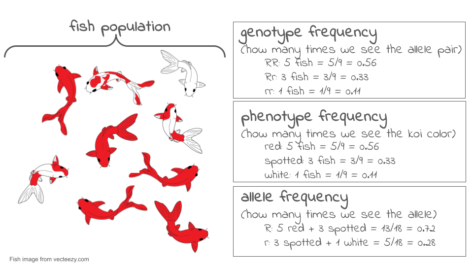
Now, let’s suppose we come back a generation later and check the genotypes of the new koi fish that now make up the population. To find the allele frequencies, we again look at each individual’s genotype, count the number of copies of each allele, and divide by the total number of gene copies. Now, we find the frequency of R has dropped to 8/18 = 0.44 or 44%, and the frequency of r has risen to 10/18 = 0.56 or 56%.
There has been a change in allele frequencies in the population over generations, so—by the definition of microevolution—we can say that the population may have evolved. If we were actually doing research, we might want to use a statistical test (called a chi-square test) to confirm that these proportions were really different.
The total set of gene copies for all genes in a population is referred to as its gene pool. The gene pool gets its name from the idea that we are essentially taking all the gene copies—for all genes—in the individuals of a population and dumping them into one large, common pool.
What would this look like? In the example above, we went through all nine individuals in the population and looked at their copies of the color gene. There were 18 individual gene copies, each of which was a R or a r allele. Imagine that we went through this same process for every gene in the koi fish, including genes that control length, number of whiskers, tail shape, metabolism, etc. There would be 18 copies of each gene pulled out and dumped into the common pool. At the end of this process, the common pool of gene copies will be the gene pool of our population.
By looking at all the copies of all the genes in a population, we can see globally how much genetic variation there is in the population. The more variation a population has, the better its ability to adapt to changes in its environment through natural selection. If there is more variation, the odds are better that there will be some alleles already present that allow organisms to survive and reproduce effectively under the new conditions.
What ultimately interests most biologists is not the frequencies of different alleles, but the frequencies of the resulting genotypes, known as the population’s genetic structure. Scientists can use the distribution of phenotypes to estimate the genotypes and alleles that make up a population. If the phenotype is observed, only the genotype of the homozygous recessive alleles can be known; the calculations provide an estimate of the remaining genotypes. Since each individual carries two alleles per gene, if the allele frequencies (p and q) are known, predicting the frequencies of these genotypes is a simple mathematical calculation to determine the probability of getting these genotypes if two alleles are drawn at random from the gene pool.
In the koi pond scenario, an individual koi fish could be pp (RR), and thus be all red; pq (Rr), spotted; or qq (rr), and thus be all white. In other words, the frequency of pp individuals is simply p2; the frequency of pq individuals is 2pq; and the frequency of qq individuals is q2. And, again, if p and q are the only two possible alleles for a given trait in the population, these genotype frequencies will sum to one: p2 + 2pq + q2 = 1.
Hardy-Weinberg Equilibrium (HWE)
In the early twentieth century, English mathematician Godfrey Hardy and German physician Wilhelm Weinberg stated the principle of equilibrium to describe the genetic makeup of a population. The theory, which later became known as the Hardy-Weinberg principle of equilibrium, states that a population’s allele and genotype frequencies are inherently stable— unless some kind of evolutionary force is acting upon the population, neither the allele nor the genotypic frequencies would change.
The Hardy-Weinberg principle assumes conditions with:
- No mutations
- No migration or emigration
- No selective pressure for or against genotype
- Large Sample Size
- Random Mating
In theory, if a population is at equilibrium — that is, there are no evolutionary forces acting upon it — generation after generation would have the same gene pool and genetic structure, and these equations would all hold true all of the time. Of course, even Hardy and Weinberg recognized that no natural population is immune to evolution. Populations in nature are constantly changing in genetic makeup due to drift, mutation, possibly migration, and selection. As a result, the only way to determine the exact distribution of phenotypes in a population is to go out and count them. But the Hardy-Weinberg principle gives scientists a mathematical baseline of a non-evolving population to which they can compare evolving populations and thereby infer what evolutionary forces might be at play. If the frequencies of alleles or genotypes deviate from the value expected from the Hardy-Weinberg equation, then the population is evolving.
Tip
No matter what genes you’re working with, Hardy-Weinberg equilibrium uses standard symbols: p and q.
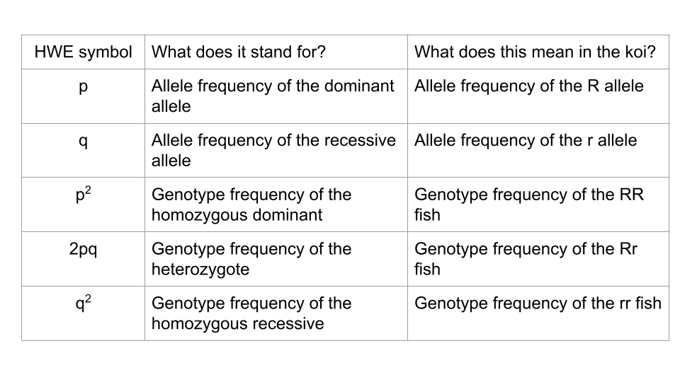
In this activity, you will use the PopGen Fishpond online simulation to explore how populations evolve over time. Rather than working with real organisms (which would take generations to study), this model allows you to speed up time and watch how genetic drift and natural selection shape populations across dozens or even hundreds of generations. You will collect allele frequency data, analyze how evolutionary forces affect genetic variation, and compare different evolutionary scenarios.
The goal of this lab is to interpret patterns in allele frequencies and genotype frequencies under different conditions. By the end, you should be able to explain: 1. how random events cause allele frequencies to drift, 1. how selection favors certain alleles over others, and 1. how a change in environment can shift which alleles are beneficial.
This activity reinforces what we discussed in lecture and provides a visual, dynamic way to observe evolution in action.
Activity 1: Modeling Hardy-Weinberg Equilibrium
In this section, you’ll explore what allele frequencies look like in a population at equilibrium (large population, no mutation, no migration, no selection, and random mating). This will also give you a chance to get used to the PopGen fishpond Simulator.
Trial 1a. Population Size = 500 koi
Open the PopGen Fishpond Simulator and click on “Run Experiments”.
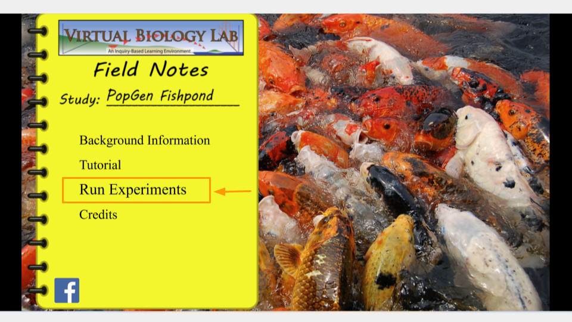
This will open the page that allows you to change the settings for your simulation. Make sure the settings have the following values. (In order to change values, click the up or down arrow next to each number.)
- Initial size: 500
- Carrying capacity: 500
- Genotype Fitness: rr = 1.0, Rr = 1.0, RR = 1.0
- Mutation Rate (R→r, r→R): 0
- Migration: 0
- Assortative Mating: 0
- Initial R Allele Proportion: 0.5
- Mortality Rate: 10
- Brood Size: 10
- Sex Ratio: 0.5
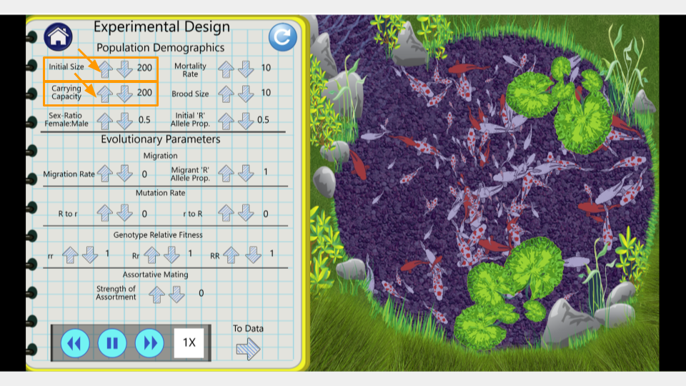
Once you’ve changed the settings, click on the arrow that says “To Data” in the bottom right corner of the lab notebook page. This will take you to the simulation results page.
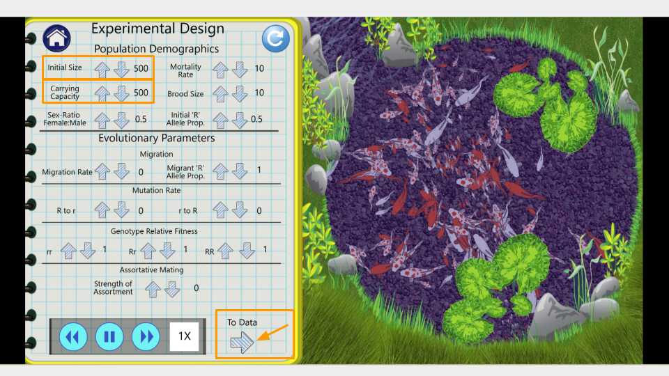
On this page, you can see the number of generations that have been simulated as well as the allele and genotype frequencies of the fishpond population. At the moment, the simulation is running fairly slowly. You can make it run faster by pressing the “forward” button on the bottom.
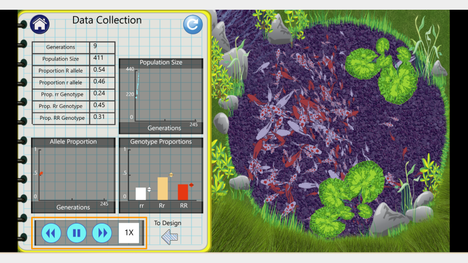
Run the model for 75 generations, then pause the simulation and record the allele and genotype frequencies. Continue running for an additional 75 generations (until you have reached generation 150). Make sure to take a screenshot of your Trial 1a fishpond and Data Collection page at 150 generations - you will submit this with your assignment!
TipResults: Hardy-Weinberg Equilibrium Simulation Trial 1a
Fill out the table below, and submit it and a screenshot of the Data Collection page at 150 generations as part of your assignment
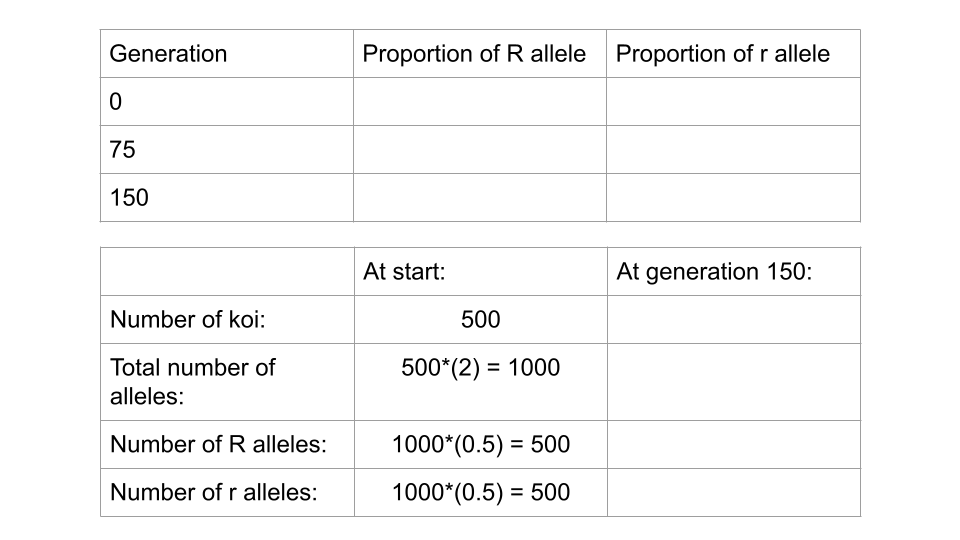
Trial 1b. Population Size = 500 koi
Run the simulation again with the same parameters as before. You can do this by clicking the “reload” button in the upper right corner of the Data Collection lab notebook page.
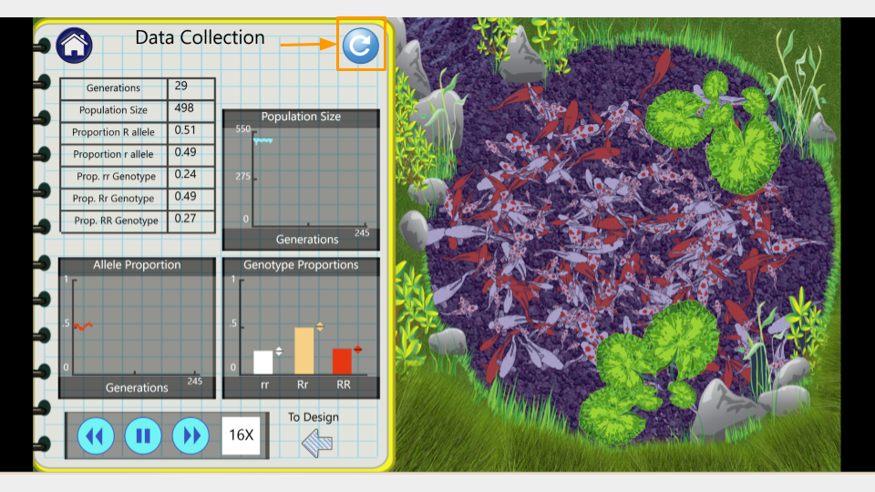
Run the model to 150 generations, recording the allele and genotype frequencies at both 75 and 150 generations. Make sure to take a screenshot of your Trial 1b fishpond and Data Collection page at 150 generations - you will submit this with your assignment!
TipResults: Hardy-Weinberg Equilibrium Simulation Trial 1b
Fill out the table below, and submit it and a screenshot of the Data Collection page at 150 generations as part of your assignment
Running a chi-square test
Under HWE, the frequencies of the alleles R and r should be the same in generation 150 as they are at the start of your simulation. While it is tempting to simply eyeball the frequencies to determine if the population is at equilibrium, a more scientific approach is to run a statistical test. For testing HWE, you can use a chi-square test to compare allele frequencies. This can be done in a spreadsheet program like Microsoft Excel or Google Sheets.
Expand this section for instructions on running a chi-square test in Microsoft Excel.
Caution
First, open a new Excel spreadsheet. You will create a table that has the frequency of each allele as rows and the generations (generation 0, or the start, and generation 150) as columns.
Once you’ve created your table, you should fill in the total count of each allele in the appropriate cell. In your earlier tables, you recorded the allele proportions, but the chi-square formula requires the actual number of each allele.
The formula for calculating allele frequency is (total number of fish)*(allele proportion).
So, if you start with 500 koi fish and an allele proportion of 0.5 for R, the total number of R alleles present in the population is 500. (Remember, each koi fish has 2 alleles, so a population of 500 fish means 1000 alleles, and half of them are R to start.)
Type in the number of R and r alleles for both the starting population (generation 0) and the ending population (generation 150).
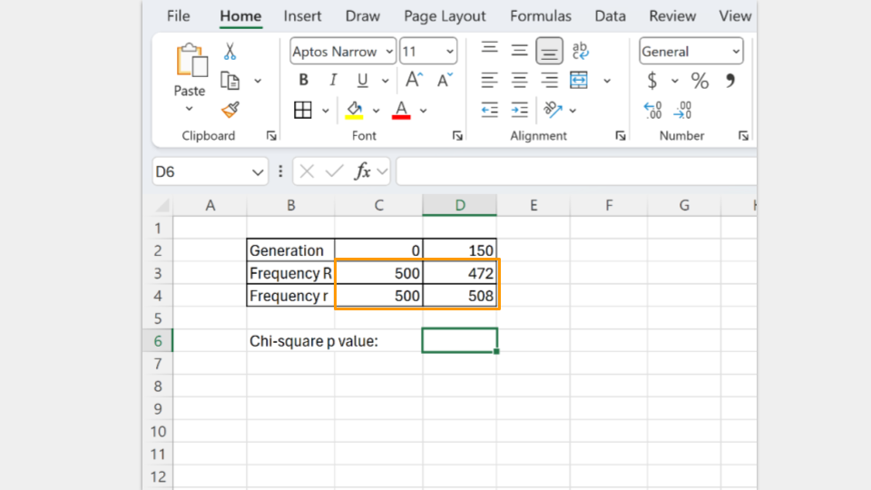
Next, type in the formula to run a chi-square test. In Excel, the formula follows the convention
=chisq.test(actual_range, expected_range)
The actual_range are the allele frequencies at generation 150. The expected_range are the allele frequencies at the start (generation 0).
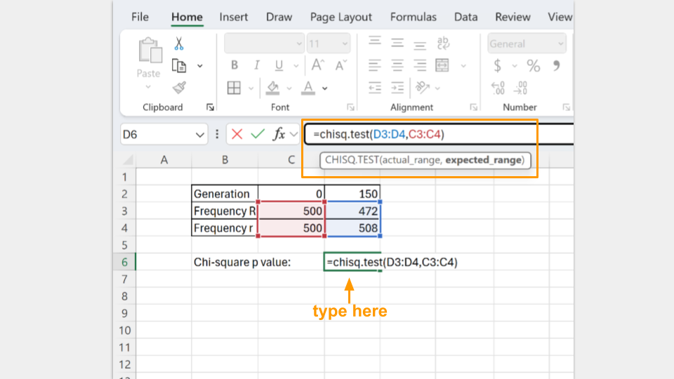
In the cell where the formula is typed, Excel will return the p-value for your chi-square test. A p-value greater than 0.05 suggests that your koi fishpond population is indeed at equilibrium. (Note: Excel may tell you there is a possible error in your formula because adjacent cells are omitted. You can ignore this, because it’s asking why you omitted the “0” and “150” that are your column headers.)
Expand this section for instructions on running a chi-square test in Google Sheets.
Caution
First, open a new Google spreadsheet. You will create a table that has the frequency of each allele as rows and the generations (generation 0, or the start, and generation 150) as columns.
Once you’ve created your table, you should fill in the total count of each allele in the appropriate cell. In your earlier tables, you recorded the allele proportions, but the chi-square formula requires the actual number of each allele.
The formula for calculating allele frequency is (total number of fish)*(allele proportion).
So, if you start with 500 koi fish and an allele proportion of 0.5 for R, the total number of R alleles present in the population is 500. (Remember, each koi fish has 2 alleles, so a population of 500 fish means 1000 alleles, and half of them are R to start.)
Type in the number of R and r alleles for both the starting population (generation 0) and the ending population (generation 150).
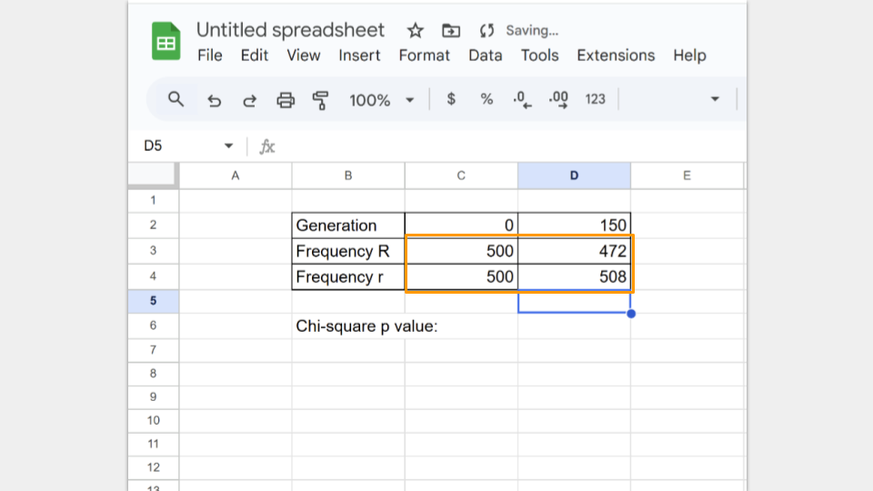
Next, type in the formula to run a chi-square test. In Google Sheets, the formula follows the convention
=CHISQ.TEST(observed_ values_range, expected_ values_range)
The observed_range are the allele frequencies at generation 150. The expected_range are the allele frequencies at the start (generation 0).
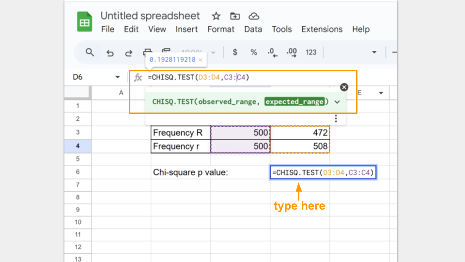
In the cell where the formula is typed, Google Sheets will return the p-value for your chi-square test. A p-value greater than 0.05 suggests that your koi fishpond population is indeed at equilibrium.
Run a chi-square test for both trial 1a and 1b and record your p-values for each.
TipCheck your knowledge: Hardy-Weinberg Equilibrium questions
Examine the change in allele frequencies for your two simulations. Did either population show a change in allele frequency? Why or why not?
Compare the change in allele frequencies between your two simulations. Are the allele frequencies identical? Why or why not?
Would you say the populations are at equilibrium without looking at the results of the chi-square test? What about afterwards? Make sure to report your p-values for both trials.
Activity 2: Modeling Genetic Drift
In this section, you will explore genetic drift, which is the random fluctuation of allele frequencies due to chance alone. No genotype has a fitness advantage in this model. You will run two trials: one with a large population and one with a small population.
Trial 2a. Population Size = 200 koi
Before running this simulation, change the settings to the following values.
- Initial size: 200
- Carrying capacity: 200
- Genotype Fitness: rr = 1.0, Rr = 1.0, RR = 1.0
- Mutation Rate (R→r, r→R): 0
- Migration: 0
- Assortative Mating: 0
- Initial R Allele Proportion: 0.5
- Mortality Rate: 10
- Brood Size: 10
- Sex Ratio: 0.5
Run the model to 150 generations, recording the allele and genotype frequencies at both 75 and 150 generations. Feel free to speed this up since it’s a simulation! Make sure to take a screenshot of your Trial 2a fishpond and Data Collection page at 150 generations - you will submit this with your assignment!
TipResults: Drift Simulation Trial 2a
Fill out the table below, and submit it and a screenshot of the Data Collection page at 150 generations as part of your assignment
Trial 2b. Population size = 25 koi
Before running this simulation, change the settings to the following values. The only parameters that have changed between this and trial 2a at the initial size and the carrying capacity.
- Initial size: 25
- Carrying capacity: 25
- Genotype Fitness: rr = 1.0, Rr = 1.0, RR = 1.0
- Mutation Rate (R→r, r→R): 0
- Migration: 0
- Assortative Mating: 0
- Initial R Allele Proportion: 0.5
- Mortality Rate: 10
- Brood Size: 10
- Sex Ratio: 0.5
Run the model to 150 generations, recording the allele and genotype frequencies at both 75 and 150 generations. Make sure to press the “reload” button so you start the simulation over from generation 1, not just continue the simulation from your previous run! Make sure to take a screenshot of your Trial 2b fishpond and Data Collection page at 150 generations - you will submit this with your assignment!
TipResults: Drift Simulation Trial 2b
Fill out the table below, and submit it and a screenshot of the Data Collection page at 150 generations as part of your assignment.
Running a chi-square test
You will again run chi-square tests on both trials using either Excel or Google Sheets.
Expand this section for instructions on running a chi-square test in Microsoft Excel.
Caution
First, open a new Excel spreadsheet. You will create a table that has the frequency of each allele as rows and the generations (generation 0, or the start, and generation 150) as columns.
Once you’ve created your table, you should fill in the total count of each allele in the appropriate cell. In your earlier tables, you recorded the allele proportions, but the chi-square formula requires the actual number of each allele.
The formula for calculating allele frequency is (total number of fish)*(allele proportion).
So, if you start with 200 koi fish and an allele proportion of 0.5 for R, the total number of R alleles present in the population is 200. (Remember, each koi fish has 2 alleles, so a population of 200 fish means 400 alleles, and half of them are R to start.) A population of 75 koi fish means 150 total alleles.
Type in the number of R and r alleles for both the starting population (generation 0) and the ending population (generation 150).
Next, type in the formula to run a chi-square test. In Excel, the formula follows the convention
=chisq.test(actual_range, expected_range)
The actual_range are the allele frequencies at generation 150. The expected_range are the allele frequencies at the start (generation 0).
In the cell where the formula is typed, Excel will return the p-value for your chi-square test. A p-value greater than 0.05 suggests that your koi fishpond population is indeed at equilibrium. (Note: Excel may tell you there is a possible error in your formula because adjacent cells are omitted. You can ignore this, because it’s asking why you omitted the “0” and “150” that are your column headers.)
Expand this section for instructions on running a chi-square test in Google Sheets.
Caution
First, open a new Google spreadsheet. You will create a table that has the frequency of each allele as rows and the generations (generation 0, or the start, and generation 150) as columns.
Once you’ve created your table, you should fill in the total count of each allele in the appropriate cell. In your earlier tables, you recorded the allele proportions, but the chi-square formula requires the actual number of each allele.
The formula for calculating allele frequency is (total number of fish)*(allele proportion).
So, if you start with 200 koi fish and an allele proportion of 0.5 for R, the total number of R alleles present in the population is 200. (Remember, each koi fish has 2 alleles, so a population of 200 fish means 400 alleles, and half of them are R to start.) A population of 75 koi fish means a total of 150 alleles.
Type in the number of R and r alleles for both the starting population (generation 0) and the ending population (generation 150).
Next, type in the formula to run a chi-square test. In Google Sheets, the formula follows the convention
=CHISQ.TEST(observed_ values_range, expected_ values_range)
The observed_range are the allele frequencies at generation 150. The expected_range are the allele frequencies at the start (generation 0).
In the cell where the formula is typed, Google Sheets will return the p-value for your chi-square test. A p-value greater than 0.05 suggests that your koi fishpond population is indeed at equilibrium.
Run a chi-square test for both trial 2a and 2b and record your p-values for each.
TipCheck your knowledge: Drift questions
Compare the change in allele frequencies between the large and small population. Which population changed more, and why?
Did either population approach fixation? (Fixation occurs when one allele reaches an allele frequency = 1) Explain why drift is more pronounced in small populations.
Why do the two drift trials show different outcomes even with the same allele frequencies and equal fitness?
How does random sampling contribute to genetic drift over many generations?
Which population is not in Hardy-Weinberg? Which condition of Hardy-Weinberg is not being met? Make sure to include the p-values from your chi-square tests to support your answer.
Activity 3: Modeling Natural Selection
Let’s introduce natural selection into the simulation by giving a fitness advantage to genotypes carrying the R allele.
Trial 3a. Reduced fitness for r allele
Before running this simulation, change the settings to the following values.
- Initial size: 500
- Carrying capacity: 500
- Genotype Fitness: rr = 0.5, Rr = 1.0, RR = 1.0
- Mutation Rate (R→r, r→R): 0
- Migration: 0
- Assortative Mating: 0
- Initial R Allele Proportion: 0.5
- Mortality Rate: 10
- Brood Size: 10
- Sex Ratio: 0.5
Run the model to 150 generations, recording the allele and genotype frequencies at both 75 and 150 generations. Make sure to press the “reload” button so you start the simulation over from generation 1, not just continue the simulation from your previous run! Make sure to take a screenshot of your Trial 3a fishpond and Data Collection page at 150 generations - you will submit this with your assignment!
TipResults: Natural Selection Simulation Trial 3a
Fill out the table below, and submit it and a screenshot of the Data Collection page at 150 generations as part of your assignment
Trial 3b. Changing the fitness of the r allele
Now you will change the environment so that the r allele becomes advantageous while using the ending population from trial 3a. This means you will not press the reload button after changing the simulation settings.
- Initial size: 500
- Carrying capacity: 500
- Genotype Fitness: rr = 1.0, Rr = 0.8, RR = 0.5
- Mutation Rate (R→r, r→R): 0
- Migration: 0
- Assortative Mating: 0
- Initial R Allele Proportion: 0.5
- Mortality Rate: 10
- Brood Size: 10
- Sex Ratio: 0.5
Run the model an additional 150 generations, recording the allele and genotype frequencies at both 225 and 300 generations. Make sure to just unpause the simulation from trial 3a instead of pressing the reload button! Make sure to take a screenshot of your Trial 3b fishpond and Data Collection page at 300 generations - you will submit this with your assignment!
TipResults: Natural Selection Simulation Trial 3b
Fill out the table below, and submit it and a screenshot of the Data Collection page at 150 generations as part of your assignment
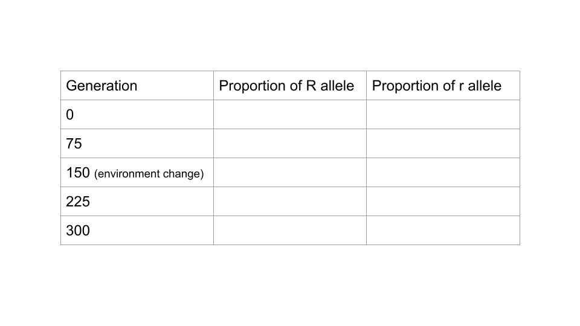
Running a chi-square test
You will again run chi-square tests on both trials using either Excel or Google Sheets.
Expand this section for instructions on running a chi-square test in Microsoft Excel.
Caution
First, open a new Excel spreadsheet. You will create a table that has the frequency of each allele as rows and the generations (generation 0, or the start, and generation 150) as columns.
Once you’ve created your table, you should fill in the total count of each allele in the appropriate cell. In your earlier tables, you recorded the allele proportions, but the chi-square formula requires the actual number of each allele.
The formula for calculating allele frequency is (total number of fish)*(allele proportion).
So, if you start with 500 koi fish and an allele proportion of 0.5 for R, the total number of R alleles present in the population is 500. (Remember, each koi fish has 2 alleles, so a population of 500 fish means 1000 alleles, and half of them are R to start.)
Type in the number of R and r alleles for both the starting population (generation 0) and the ending population (generation 150).
Next, type in the formula to run a chi-square test. In Excel, the formula follows the convention
=chisq.test(actual_range, expected_range)
The actual_range are the allele frequencies at generation 150. The expected_range are the allele frequencies at the start (generation 0).
In the cell where the formula is typed, Excel will return the p-value for your chi-square test. A p-value greater than 0.05 suggests that your koi fishpond population is indeed at equilibrium. (Note: Excel may tell you there is a possible error in your formula because adjacent cells are omitted. You can ignore this, because it’s asking why you omitted the “0” and “150” that are your column headers.)
Expand this section for instructions on running a chi-square test in Google Sheets.
Caution
First, open a new Google spreadsheet. You will create a table that has the frequency of each allele as rows and the generations (generation 0, or the start, and generation 150) as columns.
Once you’ve created your table, you should fill in the total count of each allele in the appropriate cell. In your earlier tables, you recorded the allele proportions, but the chi-square formula requires the actual number of each allele.
The formula for calculating allele frequency is (total number of fish)*(allele proportion).
So, if you start with 500 koi fish and an allele proportion of 0.5 for R, the total number of R alleles present in the population is 500. (Remember, each koi fish has 2 alleles, so a population of 500 fish means 1000 alleles, and half of them are R to start.)
Type in the number of R and r alleles for both the starting population (generation 0) and the ending population (generation 150).
Next, type in the formula to run a chi-square test. In Google Sheets, the formula follows the convention
=CHISQ.TEST(observed_ values_range, expected_ values_range)
The observed_range are the allele frequencies at generation 150. The expected_range are the allele frequencies at the start (generation 0).
In the cell where the formula is typed, Google Sheets will return the p-value for your chi-square test. A p-value greater than 0.05 suggests that your koi fishpond population is indeed at equilibrium.
Run a chi-square test for both trial 3a and 3b and record your p-values for each. Remember that for trial 3b, you started with generation 150, so the expected frequencies will be the allele frequencies observed at generation 150 in trial 3a.
TipCheck your knowledge: Natural Selection questions
How did the allele frequencies change over the 150 generations when R was beneficial?
Why does the R allele increase in a predictable (non-random) pattern in this model?
What happened to the rr genotype over time, and why?
Compare this model to the drift-only model. What differences do you notice?
What happened to the R allele when the environment changed (and the fitness of the alleles flipped)? Did the pattern follow drift or selection?
Explain why rr became the most common genotype by the end of the simulation.
How does this model illustrate that fitness depends on the environment?
Compare the two selection scenarios (trials 3a and 3b). How quickly did the population respond to environmental change?
What do I need to submit for this assignment?
Once you have finished all your simulations, you should submit your results and answers for grading. For each trial, you should submit:
- table of allele proportions at generations 75 and 150 (or 225 and 300, for trial 3b)
- screenshot of the Data Collection screen from the last generation of each trial
- the chi-square tables and calculated p-values
You will have a total of six Data Collection screenshots, six allele proportion tables, and six chi-square tables and p-values.
Check that you calculated the allele frequencies correctly for each trial. Make sure to use the correct number of koi (it’s not always 500)!
Additionally, make sure to answer each of the assigned questions.
Bonus Challenge
Try to create a list of settings that can create a population of all red fish, all white fish, or only red and spotted fish. Take a screenshot of your settings and the Data Collection page of your final population.
What evolutionary forces did you use in your simulation?